72% des jeunes femmes se sentent obligées de se raser avant un rdv
1/3 des femmes affirme s’être rasée au moins par pression sociale et non par choix
45% des hommes interrogés affirment avoir déjà eu des attentes sur l’épilation avant de changer d’avis après discussion
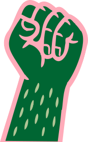
Nos engagements
-
Dialogue
Tes poils, ton choix. Mais on en parle ?
-
Bienveillance
Chacun est libre de faire ce qu’il veut avec son corps, sans pression extérieure.
-
Éducation
Les poils ne sont pas là par hasard ! Ils protègent la peau, régulent la température et jouent même un rôle dans la sensibilité tactile.
-
Déconstruction
Et si on arrêtait de s’excuser d’avoir des poils ?
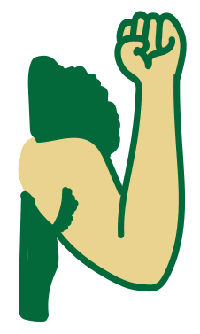
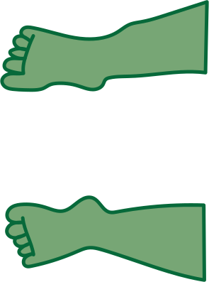
Ressources et études
-
L’épilation est-elle vraiment un choix ?
Collectif Liberté, Pilosité, Sororité. (2023). L’épilation est-elle vraiment un choix ? Éditions XYZ. Repéré le 24 mars 2025 à
https://www.editionsleduc.com/extract/9512 -
Pilosité féminine : le rôle des marques dans la mutation de ses représentations
Alice Jeanpierre. Pilosité féminine : le rôle des marques dans la mutation de ses représentations. Sciences de l’information et de la communication. 2019. dumas-03156333
-
Poils, sang et vitalité : une problématique
Karadimas, D. (2010). Poils, sang et vitalité : une problématique.
Cahiers d’anthropologie sociale, 6(1), 13-26.
https://doi.org/10.3917/cas.006.0013 - Bientôt disponible. On y travaille !
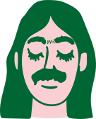
Vos témoignages
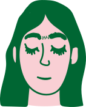
Camille, 22 ans
“On parle souvent du ‘droit de se raser’, mais rarement du ‘droit de ne pas se raser’. J’ai enfin arrêté de m’excuser pour mon corps tel qu’il est.”
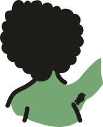
Léa, 23 ans
“Arrêter de me raser les aisselles, c’était pas un choix réfléchi. Juste un ras-le-bol. Et au final, ça m’a fait du bien.”
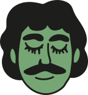
Julien, 27 ans
“Je me suis longtemps rasé la moustache sans réfléchir. C’était juste… la norme. Un jour, j’ai arrêté, par curiosité. Au début, j’étais pas super à l’aise, mais finalement j’ai trouvé ça libérateur. Maintenant, je la garde ou je la rase selon mon humeur — plus selon la pression.”
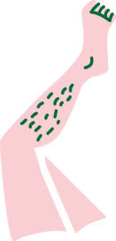
Partage ta voixSarah, 25 ans
“Pendant des années, je me suis sentie obligée de me raser avant chaque rendez-vous. Jusqu’à ce que mon copain me dise qu’il s’en fichait complètement. C’est là que j’ai compris que cette pression venait surtout de moi… et de la société.”
FAQ
Les poils ont-ils une fonction biologique ?
Oui, les poils jouent plusieurs rôles essentiels :
- Protection : ils protègent la peau contre les rayons ultraviolets (UV) et les agressions extérieures.
- Régulation thermique : les poils aident à maintenir la température corporelle en retenant la chaleur.
- Réduction des frottements : ils diminuent les irritations cutanées en limitant les frottements peau contre peau ou avec les vêtements.
- Sensibilité tactile : les poils augmentent la sensibilité de la peau, aidant à détecter les stimuli légers.
Les poils ça pue ?
Faux. C’est la sueur qui a mauvaise réputation, pas les poils. En fait, les poils aident même à réguler la transpiration et à la dissiper. Si tu sens mauvais, ce n’est pas la faute de tes poils, mais plutôt celle de l’hygiène. Raser ou non, la règle est la même : une bonne douche, c’est la clé.
Les poils favorisent les infections ?
Faux aussi. En réalité, les poils agissent comme un bouclier. Ils protègent la peau des frottements et des bactéries extérieures. Quand on rase, on enlève cette barrière naturelle, ce qui expose la peau aux irritations et aux infections. Moins de poils, c’est plus de risques pour ta peau.
Pourquoi c’est encore un tabou ?
Parce qu’on vit dans une société où les médias, la pub et les réseaux sociaux ont dressé un standard de beauté irréaliste, souvent retouché, où tout doit être lisse et parfait. La réalité, c’est que chaque corps est différent, et les poils font partie de cette diversité. La vraie question est : pourquoi la norme serait-elle celle d’une peau “sans défaut” ? Ce n’est pas la réalité des corps humains.
Les poils sont sales ?
Encore une fausse idée. Les poils ne sont pas sales en soi, c’est l’hygiène qui compte. Tant que tu te douches régulièrement et que tu prends soin de toi, tes poils n’ont pas à être considérés comme quelque chose de dégoûtant. Les poils sont juste des éléments naturels du corps humain, comme les cheveux ou les cils.
Les poils rendent moins sexy ?
Complètement faux. L’attirance n’a rien à voir avec le fait d’avoir ou non des poils. Ce qui est sexy, c’est avant tout la confiance en soi, le respect de ses choix, et l’acceptation de son corps. Les poils, ou leur absence, ne définissent pas l’attractivité. C’est la personnalité et la complicité qui comptent bien plus.
Les poils empêchent la peau de respirer ?
Pas du tout. La peau respire par ses pores, et les poils ne les bouchent pas. En fait, les poils jouent même un rôle important dans la régulation de la température corporelle et la protection contre les agressions extérieures. Ils ne gênent en rien la respiration de la peau.
Raser c’est plus hygiénique ?
Faux. Raser les poils peut en fait fragiliser la peau, la rendant plus vulnérable aux infections. Les poils ont une fonction protectrice, et quand on les enlève, la peau est exposée directement aux bactéries et à la pollution. Le plus important pour être hygiénique, c’est de bien prendre soin de sa peau, peu importe la quantité de poils.
Les poils influencent-ils la vie de couple ?
Les poils peuvent influencer la dynamique d’un couple, selon les préférences personnelles et les normes intériorisées. Une communication ouverte sur le sujet est essentielle pour éviter les malentendus et favoriser l’acceptation mutuelle.
Les poils c’est pas féminin ?
Faux. Être féminin, ça ne veut pas dire être lisse comme une poupée en plastique. Les poils n’ont pas de genre, ce sont des éléments naturels du corps humain. Penser que la féminité passe par l’absence totale de pilosité, c’est réduire les femmes à un idéal irréaliste imposé par la société. Tu peux être féminine, badass, douce, stylée — avec ou sans poils. C’est toi qui décides ce que “féminin” veut dire pour toi.
Pourquoi autant de pression sociale sur l’épilation ?
La pression sociale liée à l’épilation découle de normes esthétiques établies depuis des décennies, associant l’absence de poils à la féminité et à la beauté. Ces standards sont renforcés par les médias, la publicité et les attentes culturelles.
Et si on parlait de nos envies sans tabous ?
Aborder le sujet avec bienveillance et ouverture est crucial. Choisissez un moment propice pour discuter de vos préférences et écoutez celles de votre partenaire sans jugement. La communication honnête renforce la confiance et l’intimité.
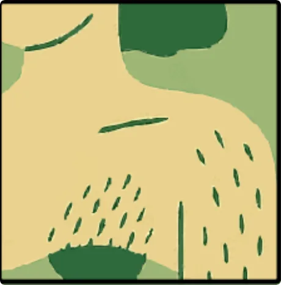
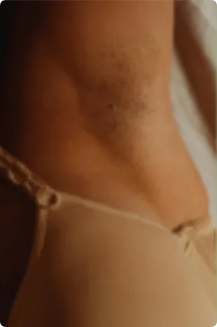
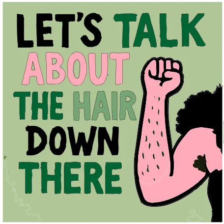
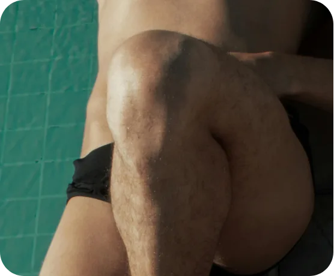
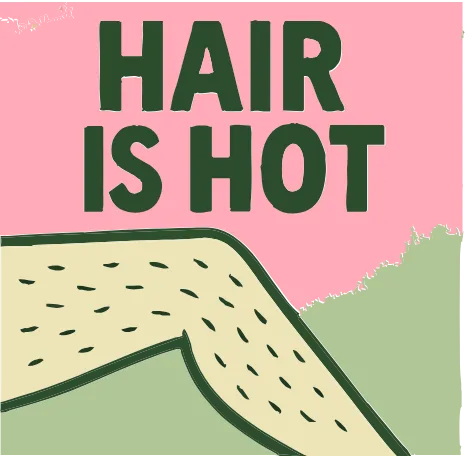
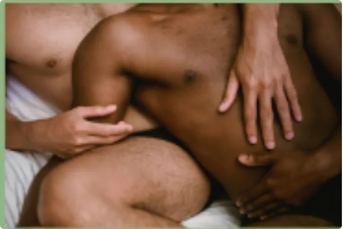
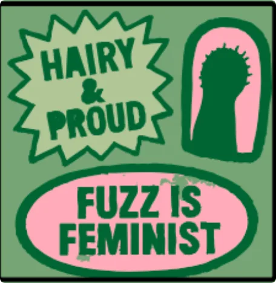
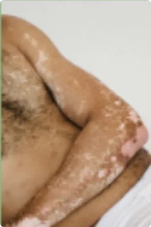
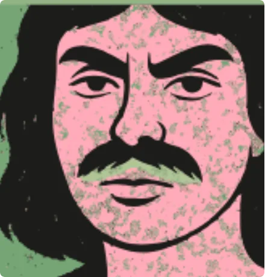
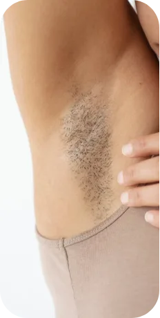
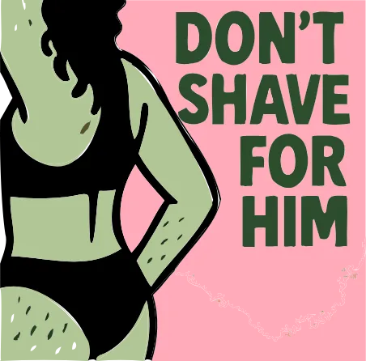
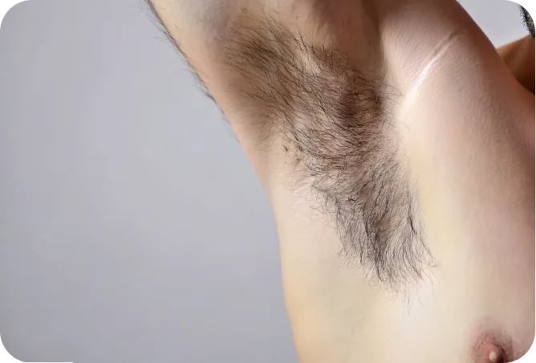
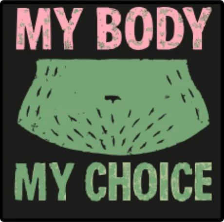
Laisse ton témoignage
Nos affiches
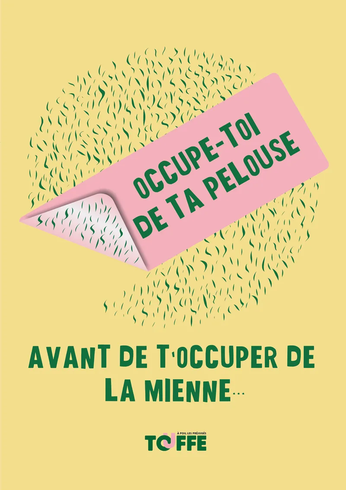
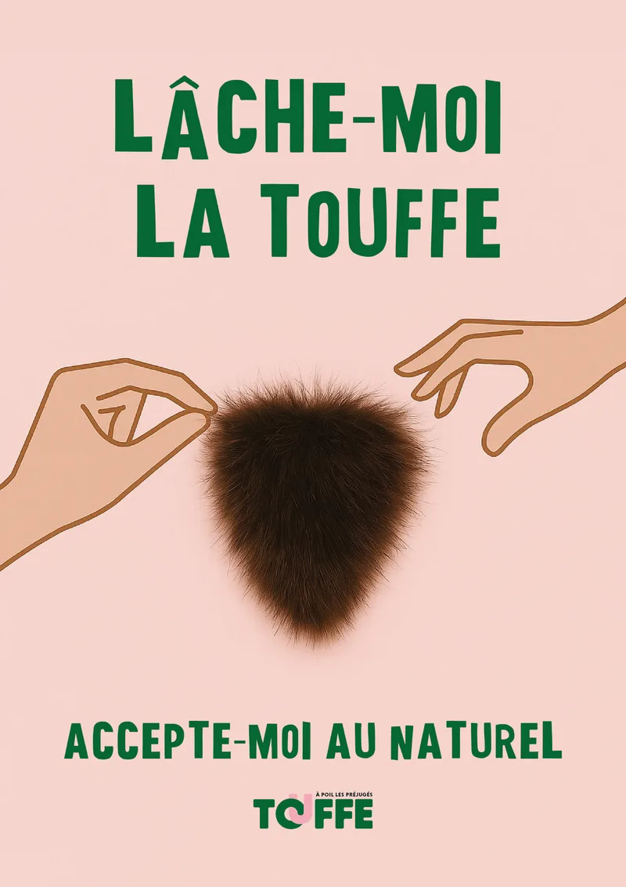
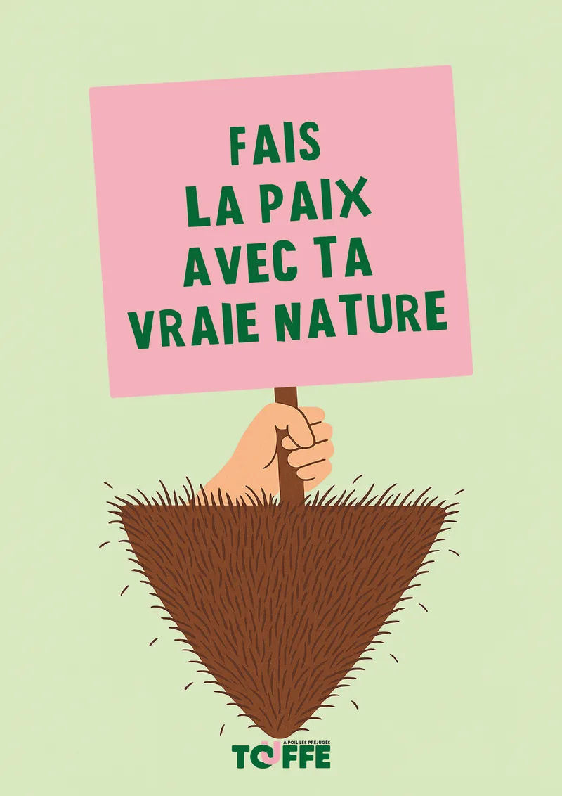
Rejoins la
communauté
Touffe !
Tu te poses d’autres questions ?
Partage tes questions, doutes ou témoignages anonymement. Nos spécialistes et bénévoles sont là pour te guider.